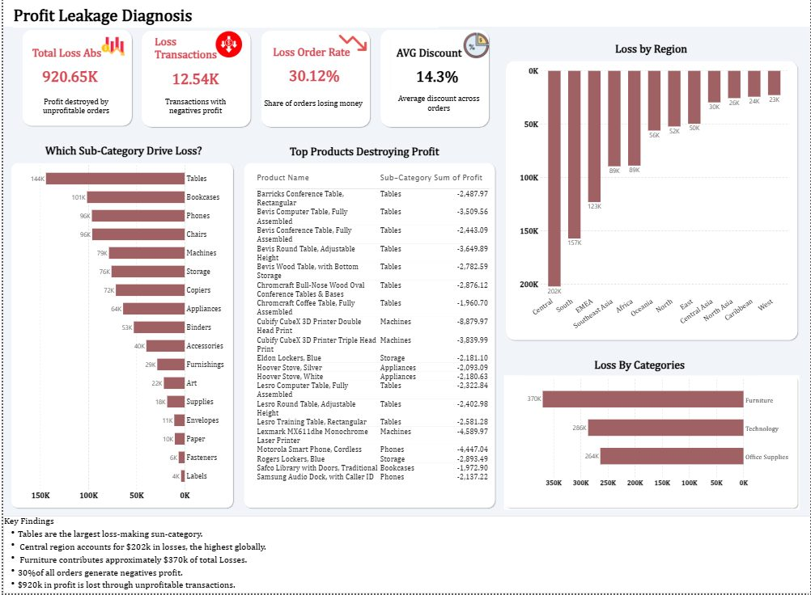
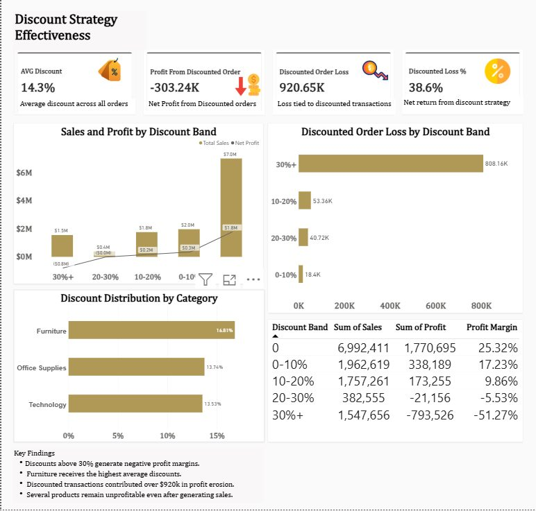
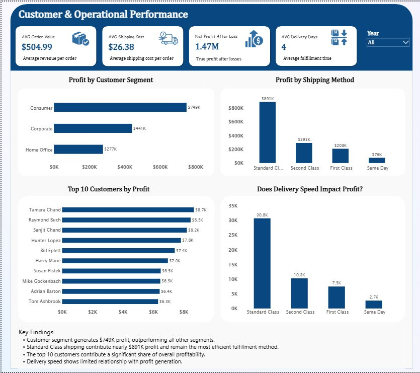

Retail · Profitability
The business sells $12.64M a year but keeps only $1.47M as profit. Where is the money being lost, and what should management change first?

When I worked in sales, discounts were the easiest way to close a deal. Nobody on the sales side saw what they did to profit afterwards. I wanted to build the report a CEO would need to see that: not just how much we sell, but which sales actually make money.
| Discount | Sales | Profit | Margin |
|---|---|---|---|
| No discount | $6,992,411 | $1,770,695 | 25.32% |
| 0 to 10% | $1,962,619 | $338,189 | 17.23% |
| 10 to 20% | $1,757,261 | $173,255 | 9.86% |
| 20 to 30% | $382,555 | -$21,156 | -5.53% |
| Over 30% | $1,547,656 | -$793,526 | -51.27% |
Margin drops with every discount band. Past 20% the business loses money, and orders discounted over 30% lose about half of what they sell. Taken together, discounted orders lost $303K overall.
By product: Tables lose the most ($144K), followed by Bookcases ($101K), Phones ($96K) and Chairs ($96K). Furniture is the worst category at $370K in losses, and it also gets the highest average discount (16.8%).
By region: Central loses the most ($202K), then South ($157K) and EMEA ($123K).
The Consumer segment brings in $749K profit, more than Corporate ($441K) and Home Office ($277K). Standard Class shipping earns the most profit ($891K). Faster shipping didn't show a clear link to higher profit.
The data doesn't include product costs or the reason each discount was given. With those, I could separate discounts that win repeat customers from ones that just give margin away.


Open to remote Business Analyst, Data Analyst, BI and Sales or Revenue Operations roles. The fastest way to reach me is by email.